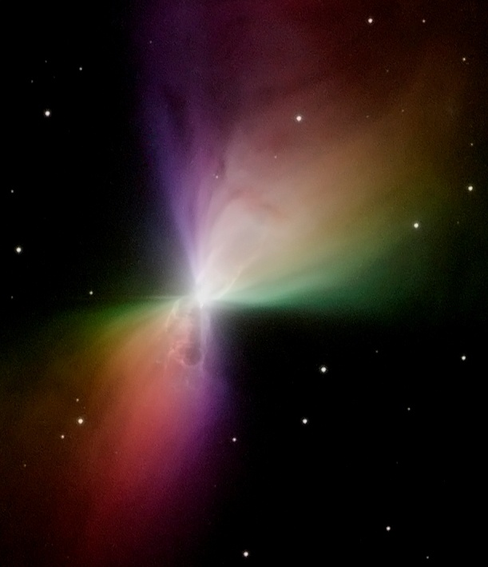
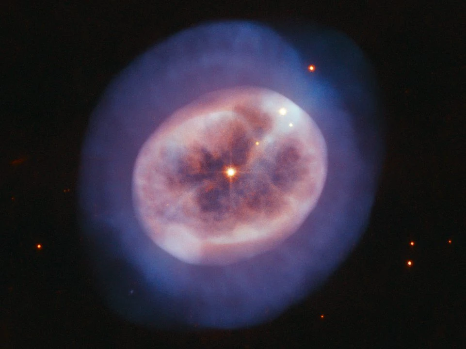
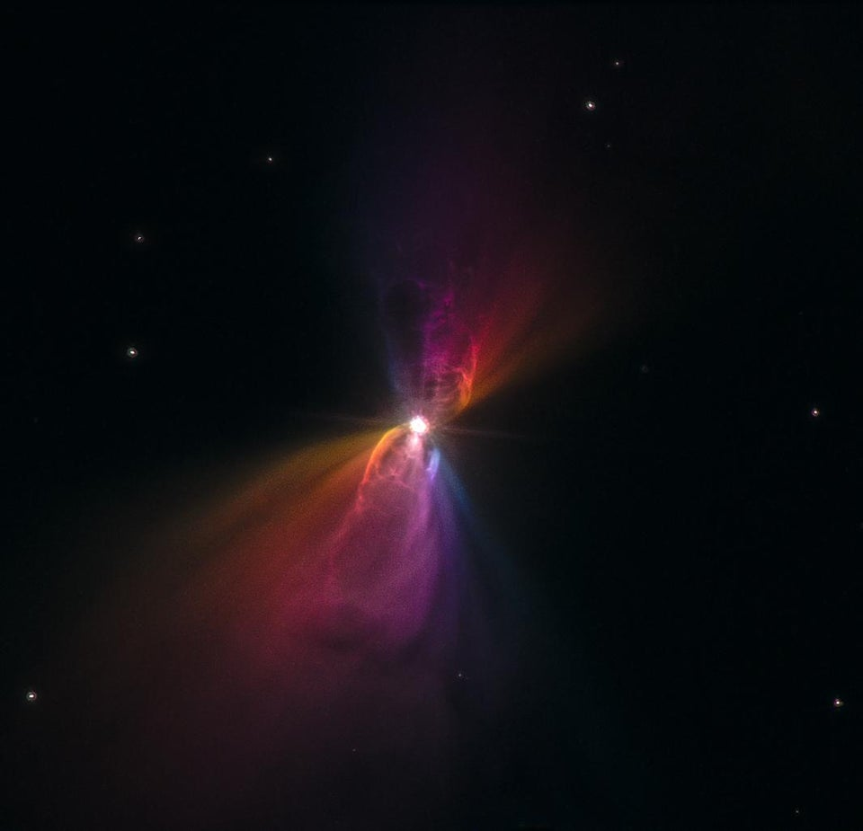
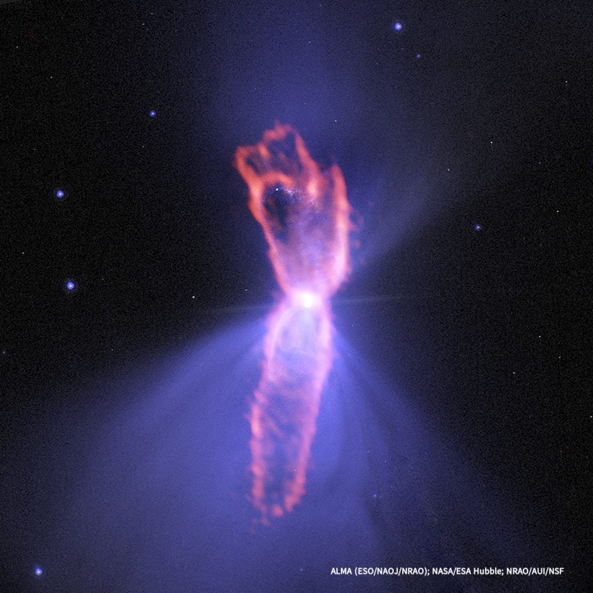
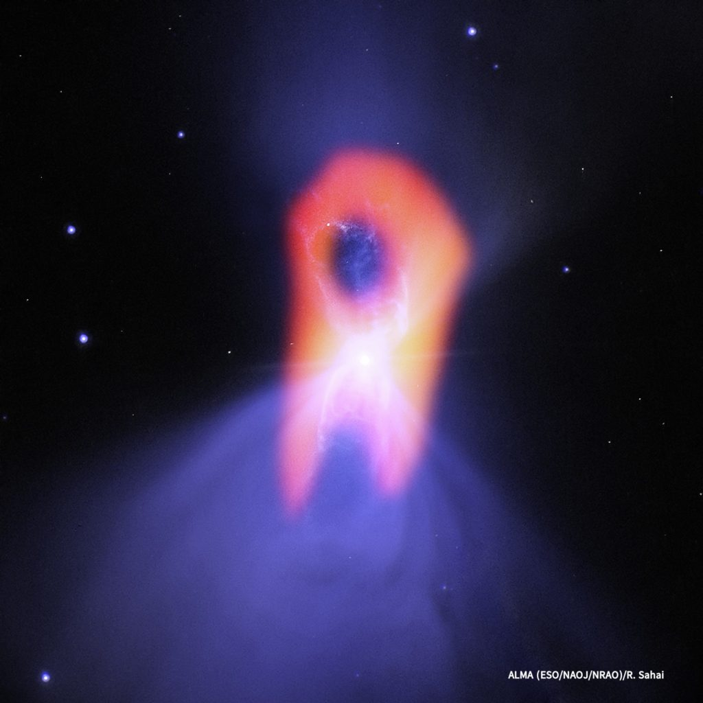

ဒီ နက်ဗြူလာ ဓါတ်ငွေ့ တိမ်တိုက် ကြီးဟာ ကမ္ဘာက နေဆို အလင်းနှစ် ၅,၀၀၀ ခန့် ဝေးတဲ့ အရပ်မှာ တည်ရှိပါတယ်။
ဒီ နက်ဗြူလာဟာ စကြာဝဠာ ထဲမှာ အအေးဆုံး အရပ်ဒေသ ဖြစ်တယ် ဆိုတာကို ၁၉၉၅ ခုနှစ်က ပြုလုပ်ခဲ့တဲ့ သုတေသန တစ်ခုကနေ အတည် ပြုနိုင် ခဲ့ပါတယ်။ ဒီ သုတေသနကို နက္ခတ် ပညာရှင်တွေ ဖြစ်တဲ့ ရာဗင်ဒရာ ဆဟိုင်း (Raghvendra Sahai) နဲ့ လားစ် အာက်နီ နေမန်း (Lars-Åke Nyman) တို့ နှစ်ဦးက ပြုလုပ်ခဲ့တာ ဖြစ်ပါတယ်။
ဒီ သုတေသနမှာ ပညာရှင် တွေဟာ ဘူးမရင်း နက်ဗြူလာ ကြီးကို စောင့်ကြည့်လေ့လာ ခဲ့ကြပါတယ်။ ဒီ အခါ ဒီ နက်ဗြူလာရဲ့ အပူချိန်ဟာ သုညအောက် -၂၇၂ ဒီဂရီ စင်တီဂရိတ်ပဲ ရှိတယ် ဆိုတာကို တွေ့လာ ရပါတယ်။
အနှုတ် ၂၇၂ ဒီဂရီ ဆိုတာ absolute zero လို့ခေါ်တဲ့ စကြာဝဠာရဲ့ အနိမ့်ဆုံး အပူချိန် ဖြစ်တဲ့ အနှုတ် ၂၇၃ ဒီဂရီ စင်တီဂရိတ်ထက် ၁ ဒီဂရီ ပဲ ပိုပူတာပါ။ အနှုတ် ၂၇၃ ဒီဂရီ စင်တီဂရိတ်ကို absolute zero လို့လဲ ခေါ်ကြပါတယ်။

တနည်းအားဖြင့် ဒါဟာ စကြာဝဠာ ရဲ့ လက်ရှိ အပူချိန် ဖြစ်ပါတယ်။ ဒီ နောက်ခံ အပူချိန်ဟာ နက္ခတ် ပညာရှင် တွေရဲ့ တိုင်းတာ မှုအရ အနှုတ် ၂၇၀ ဒီဂရီ ရှိပါတယ်။
ဆိုလိုတာက အခု ဘူးမရင်း နက်ဗြူလာရဲ့ အပူချိန်ဟာ စကြာဝဠာရဲ့ နောက်ခံ သဘာဝ အပူချိန် ထက်တောင်မှ ပိုပြီး အေးနေပါ သေးတယ်။

ဒီ နက်ဗြူလာ ကြီးဟာ ထူးထူးဆန်းဆန်း သဲနာရီလို ပုံစံ ဖြစ်နေပါတယ်။ ဒီလို ဖြစ်ရတာက ဒီ နက်ဗြူလာ ဖြစ်လာမယ့်ကြယ် ပေါက်ကွဲသွား ခဲ့စဉ်က ဓါတ်ငွေ့တွေနဲ့ အခြား ဒြပ်ပစ္စည်း တွေဟာ ကြယ်ရဲ့ ဆန့်ကျင်ဖက် အရပ် နှစ်ခုကို လွင့်စင် ထွက်သွား ခဲ့တာကြောင့် ဒီလို ပုံ ဖြစ်လာရတာ ဖြစ်ပါတယ်။
ဒီ နက်ဗြူလာကို ဩစတြေးလျ နိုင်ငံက တယ်လီစကုပ် ကြီးကို အသုံးပြုပြီး ရှာတွေ့ ခဲ့တာမို့ ဩစတြေးလျ ဌာန တိုင်းရင်းသား တွေရဲ့ ရိုးရာ လက်နက် တစ်ခုဖြစ်တဲ့ boomerang ကို ဂုဏ်ပြုတဲ့ အနေနဲ့ Boomerang Nebula လို့ အမည် မှည့်ခေါ်ခဲ့တာ ဖြစ်ပါတယ်။

သူဟာ အခြား နက္ခတ် ပညာရှင် တစ်ဦး ဖြစ်တဲ့ ဒေါက်တာ နီမန် နဲ့ ပူးတွဲပြီး ဒီ ဘူးမရင်း နက်ဗြူလာ ကြီးကို လေ့လာခဲ့ပါတယ်။
ဒီ လေ့လာမှု သုတေသန ရလဒ် အရ ဒီ နက်ဗြူလာ ကြီးဟာ သူ့ပတ်ဝန်းကျင်က အပူနဲ့ အခြား ရောင်ခြည်တွေကို စုပ်ယူ နေတယ် ဆိုတာကို တွေ့လာ ကြပါတယ်။

ဒါဟာ ရှာတွေ့ ပြီးသမျှ စကြာဝဠာ တစ်ခုလုံးမှာ နောက်ခံ သဘာဝ ပတ်ဝန်းကျင် အပူချိန်ထက် ပိုအေးတဲ့ တစ်ခုတည်းသော အရပ်ဒေသ ဖြစ်ပါတယ်။
ဘာ့ကြောင့် ဘူးမရင်း နက်ဗြူလာက နောက်ခံအပူချိန်ထက် ပိုအေးနေရတာလဲ
ဘူးမရင်း နက်ဗြူလာဟာ planetary nebula (ဂြိုဟ် နက်ဗြူလာ) အမျိုးအစား ဖြစ်ပါတယ်။ ဒီ နက်ဗြူလာ အမျိုးအစားဟာ ကြယ်တစ်စင်းရဲ့ နောက်ဆုံး ရုပ်ကြွင်းလဲ ဖြစ်ပါတယ်။ကြယ်တွေဟာ ဟိုက်ဒြိုဂျင် ဓါတ်ငွေ့ကို အဏုမြူ ဓါတ်ပြု လောင်ကျွမ်းပြီး စွမ်းအင် အဖြစ် ထုတ်လွှတ် ပေးပါတယ်။ လောင်ကျွမ်းစရာ လောင်စာတွေ ကုန်သွားတဲ့ အခါ ကြယ်ရဲ့ အူတိုင်ဟာ တည်ငြိမ်မှု ပျက်ပြား သွားတဲ့ အတွက် ကြယ်ရဲ့ အပြင် အကာအလွှာဟာ အာကာသ ထဲကို ပေါက်ကွဲပြီး ထွက်သွားပါတယ်။

ဒါပေမယ့် အခု ဘူးမရင်း နက်ဗြူလာ ကတော့ ထူးထူး ဆန်းဆန်း လုံးဝန်းတဲ့ ပုံသဏ္ဍာန် မရှိပဲ သဲနာရှိလို ပုံစံ ဖြစ်နေပါတယ်။ နောက်ပြီး ဒီ နက်ဗြူလာ ကနေ မြောက်များလှ စွာသော အက်တမ်တွေကို အလွန် လျင်မြန်တဲ့ အလျင်နဲ့ မှုတ်ထုတ် နေပါတယ်။ ဒီလို မှုတ်ထုတ်နေတာ အနည်းဆုံး နှစ် ၁,၅၀၀ လောက် ရှိခဲ့ပြီလို့ ခန့်မှန်း ကြပါတယ်။
ဒီ အချက်ဟာ ဘူးမရင်း နက်ဗြူလာ ဘာ့ကြောင့် စကြာဝဠာ ထဲမှာ အအေးဆုံး နေရာ ဒေသ ဖြစ်နေရတာလဲ ဆိုတဲ့ မေးခွန်းရဲ့ အဖြေပဲ ဖြစ်ပါတယ်။

ဒါ့ကြောင့်လဲ ဒီ နက်ဗြူလာရဲ့ အပူချိန်ဟာ ပတ်ဝန်းကျင် အပူချိန်ထက် ပိုအေးနေ ရတာ ဖြစ်ပါတယ်လို့ နက္ခတ် ပညာရှင် တွေက ယူဆ ကြပါတယ်။
Reference: Where is the coldest place in the Universe? | BBC Sky and Night Magazine